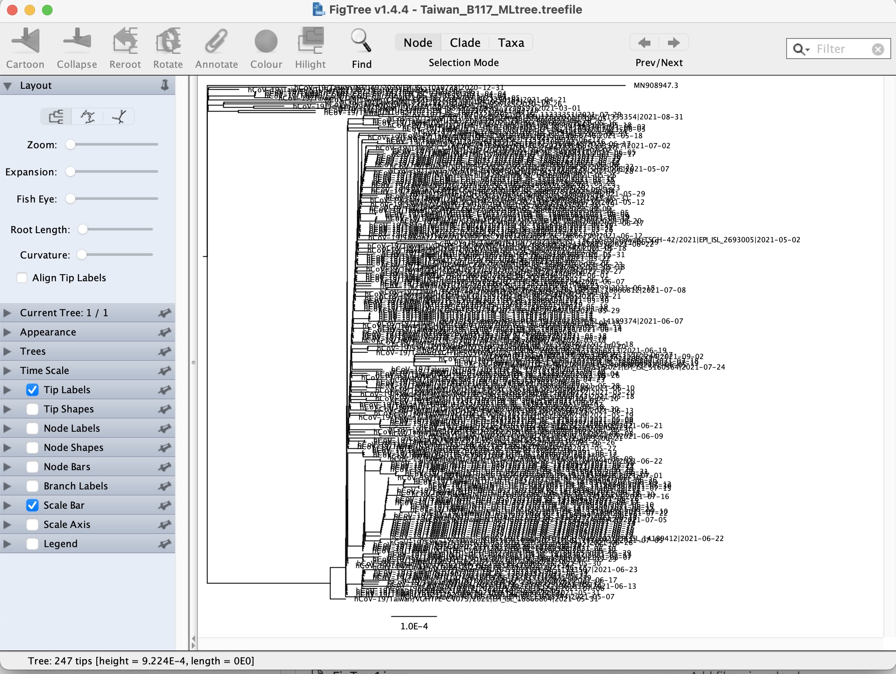

Maximum Likelihood phylogenetic trees
Once you have a sequence alignment, it is now possible to construct a phylogenetic tree. Approaches for building phylogenies can varying in complexity, from a relatively simple approach in Neighbour Joining trees that builds trees based on pairwise distances, to Maximum Likelihood and Bayesian methods.
These are more complex and computationally intensive, and incorporate statistical models to infer the most probable evolutionary scenarios while considering branch lengths and substitution rates and models of evolution, which offers a nuanced depiction of evolutionary processes.
For this exercise, you will be build a ML tree using the aligned and masked SARS-CoV-2 B.1.1.7 variant alignment we produced in the last exercise - "Taiwan_B117_aligned_masked.fasta". Here we are using the full genome of SARS-CoV-2 but your input file could equally be any aligned sequence or partial sequence, for example an alignment of concatenated SNPs or an alignment of single or multiple genes in isolation.
Keep in mind though that if you are using a partial genome sequence then branch lengths and substitution rates will be scaled to the length of the input sequence rather than the full genome.
These ML trees can take time to build, depending on the number of threads you assign and the number and length of the sequences, each tree can take hours to complete. We have provided you the results in the data folder but try runnning these on your machines in your own time.
Building ML phylogenies with IQtree
The ML tree will build the phylogeny using nucleotide substitution models, which are mathematical representations used in phylogenetics to describe the rates and patterns of substitutions among nucleotides over evolutionary time. We touched in these models in the lecture, but more information is available here.
- We first want to perform a model test in IQtree to determine the optimal substitution model for our sequence data. More information about the options for this can be found here.
- Unzip it and open it using a text viewer. We have provided you with this result in the data folder.
- Next we can build a ML tree using this optimal substitution model after the (-m) option. We can also produce a tree with branch and node support (how confident we are with the branch lengths and node placement) by running the command by bootstrapping with the -B option following by an integer, and an assessment of the branch support using -alrt following by an integer. More information on bootstrapping and branch support is available here:
- --prefix = The prefix to use for all output files.
- -keep-ident = As standard, IQtree will only keep one identical sequence, add this option to keep all sequences.
- -T = The number of threads
-
Please open FigTree.
-
Go to File > Open and select "Taiwan_B117_MLtree.treefile".
-
Click 'OK' on the next screen. Now you should see the tree.

-
It probably looks a bit messy due to the size of the tip labels (sequence names). We can reduce the size of the font to make the tree clearer by navigating to this panel on the right, clicking the arrow next to "Tip Labels" and reducing the font size:
-
Explore some other options to change the shape of the tree and bring up different labels.
iqtree -s Taiwan_B117_aligned_masked.fasta -m TEST -T 2
This will create a zipped file called "Taiwan_B117_aligned_masked.fasta.model.gz" with the results of the model test.
Question: What is the best substitution model identified in this run?
iqtree -s Taiwan_B117_aligned_masked.fasta -m model --prefix Taiwan_B117_MLtree -alrt 1000 -B 1000 -keep-ident -T 2
*Replace 'model' with the name of the best performing model from the previous model test result.
The other options called in this command are:
There will be 9 output files created with this run, the important file will be the "Taiwan_B117_MLtree.treefile", which contains the best tree found by ML with the support values added.
Now we can view the "Taiwan_B117_MLtree.treefile".
For more information on runnning IQtree, click here.